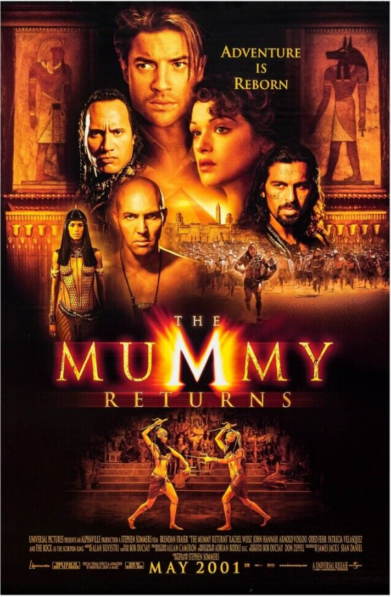
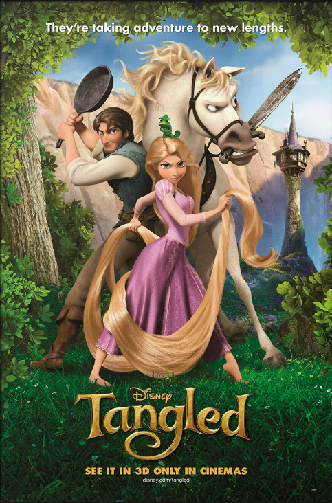
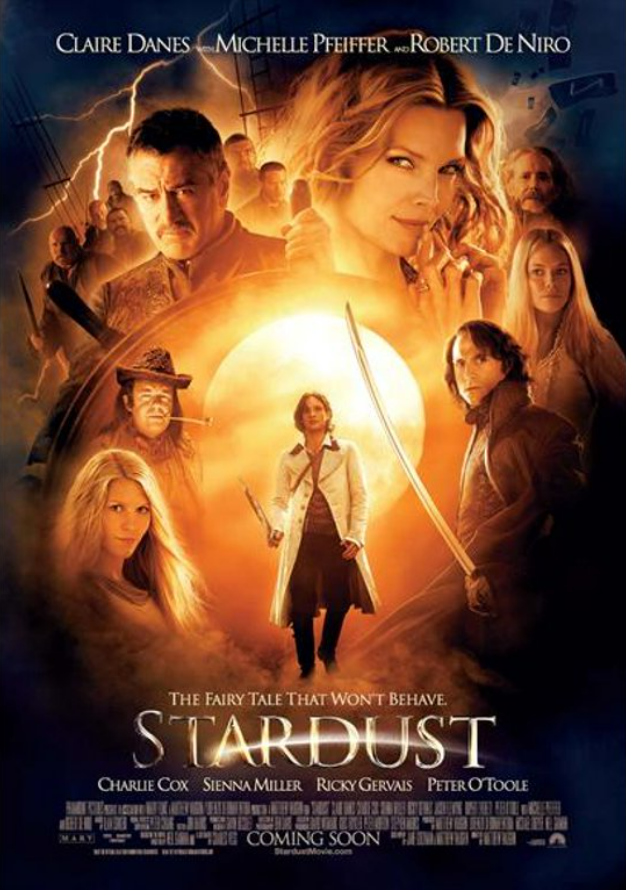
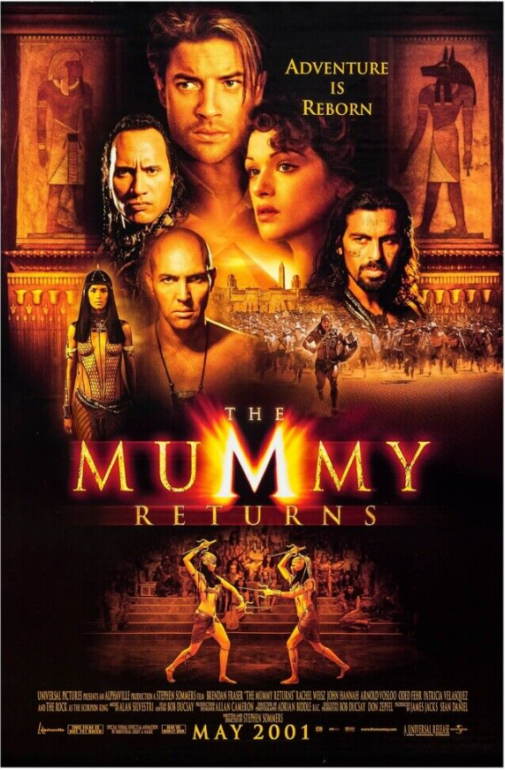
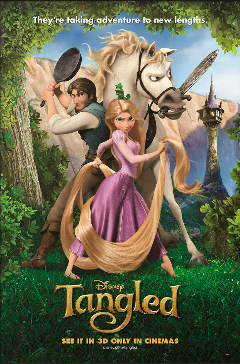
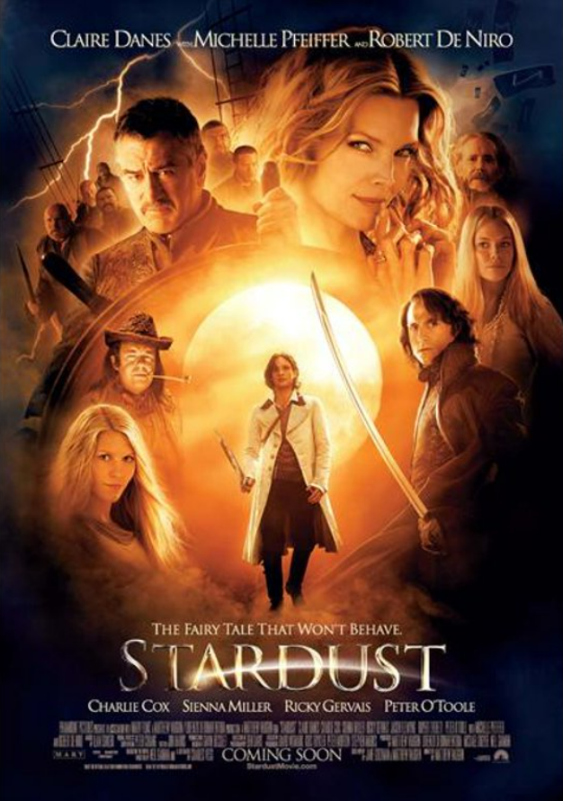
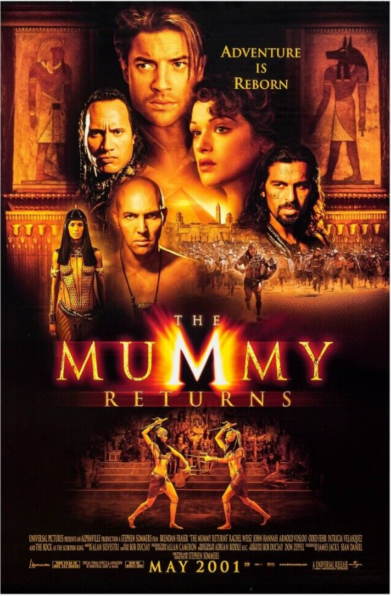
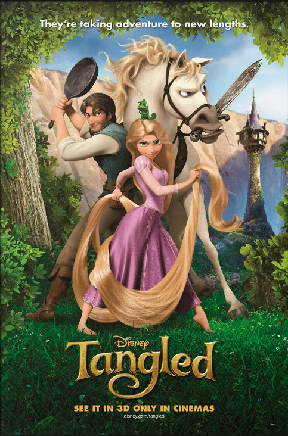
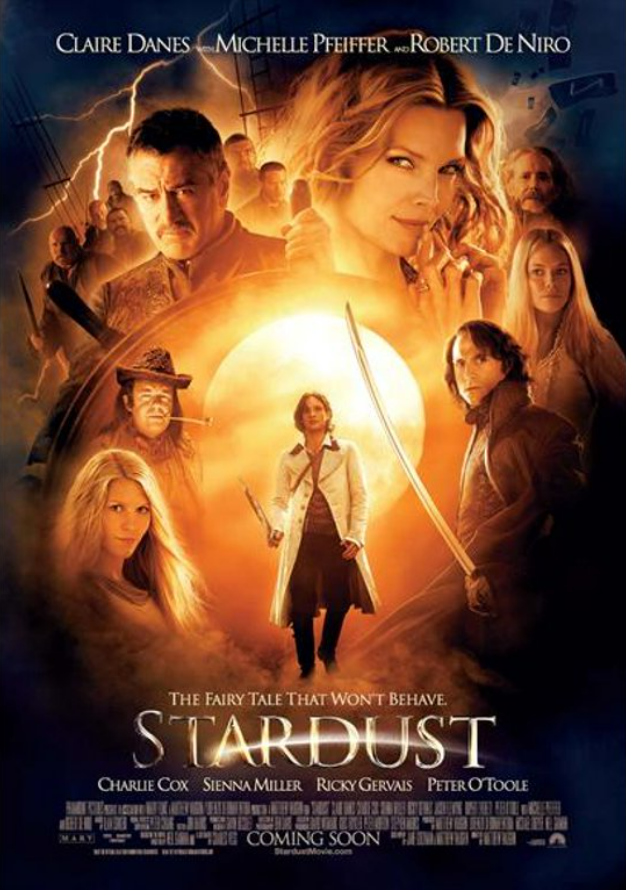
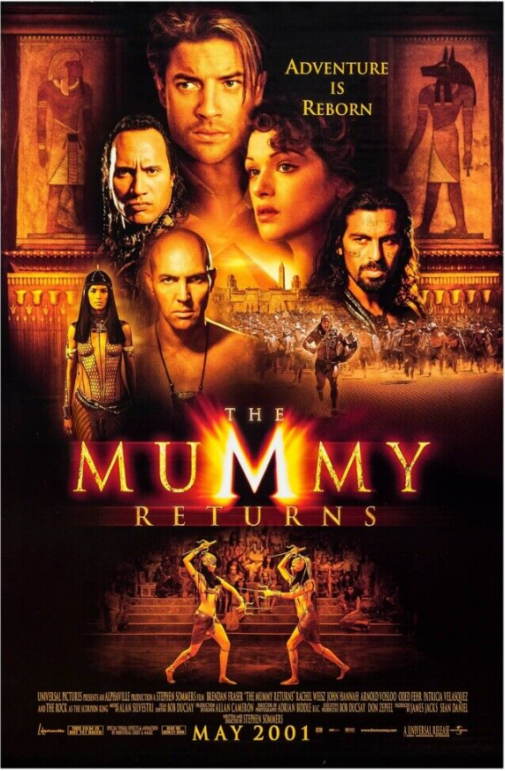
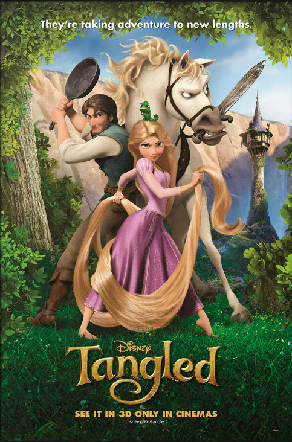
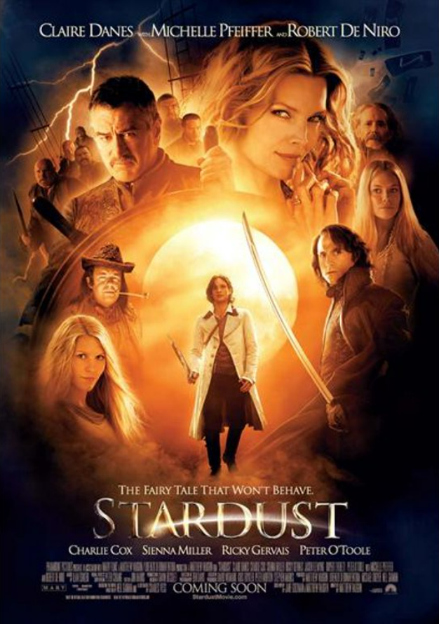
Sophie (Emily Mortimer) has an uneventful life at
her late father's hat shop, but all that changes
when she runs into the
wizard Howl (Christian
Bale), who lives in a magical flying castle.
The possessive Witch of Waste (Lauren Bacall)
takes
issue with their encounter and casts a spell
on young Sophie, which ages her prematurely. Now
an elderly grandma,
Sophie must either learn to
accept to her new form, or find the courage and
confidence to break her curse.
The evil mummy Imhotep returns to wreak havoc as he
resumes his relentless search for power and immortality.
To make
matters worse, another ancient evil has been
unleashed, even more dangerous than Imhotep. Only the
heroic Rick O'Connell
and his intrepid Egyptologist wife
stand in the way of these terrors as they embark
upon a desperate mission to save the world.